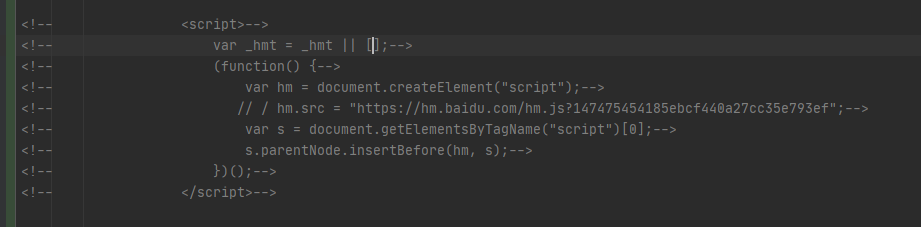

@TOC
npm安装插件
Hexo 安装插件
注意：需要使用超级权限在你的博客（hexoblog）目录下生成 npm/cnpm 安装你的plugin ，否则会安装在其他路径导致plugin没有安装到对应博客目录下的 node_mudules中，对应也就无法使用该插件。
- 建议新手倒腾之前最好将自己博客项目备份或者git一份，防止不可逆转的错误，到时候就凉凉了。(我就是这么过来的.~~)
1. hexo使用玩偶以及关闭玩偶
2.使用评论系统
3.添加RSS功能
4.顶部背景朦胧效果关闭
在 themes/source/css/matery.css下的
581~585 行左右。
将其注释掉就行
.bg-cover:after {
-webkit-animation: rainbow 60s infinite;*/
animation: rainbow 60s infinite;*/
}
5.文章插入视频
- 模板
<div style="position: relative; width: 100%; height: 0; padding-bottom: 75%;"><iframe
src="//player.bilibili.com/player.html?aid=39807850&cid=69927212&page=1" scrolling="no" border="0"
frameborder="no" framespacing="0" allowfullscreen="true" style="position: absolute; width: 100%;
height: 100%; left: 0; top: 0;"> </iframe></div>
test
用其官方自带的tag plugins 将其打包.
目的让以后重复工作减少。
1.先在该路径下注册自己的标签
2.实现标签内容代码
- 相同路径下创建 bili.js
'use script'
function bili2(args){
const id = args[0];
return '<div style="position: relative; width: 100%; height: 0; padding-bottom: 75%;"><iframe ' +
'src="//player.bilibili.com/player.html?'+id+'" scrolling="no" border="0" ' +
'frameborder="no" framespacing="0" allowfullscreen="true" style="position: absolute; width: 100%; ' +
'height: 100%; left: 0; top: 0;"> </iframe></div>';
}
module.exports = bili2;或者
'use strict';
const { htmlTag } = require('hexo-util');
/*
'<div style="position: relative; width: 100%; height: 0; padding-bottom: 75%;"><iframe ' +
'src="//player.bilibili.com/player.html?'+id+'" scrolling="no" border="0" ' +
'frameborder="no" framespacing="0" allowfullscreen="true" style="position: absolute; width: 100%; ' +
'height: 100%; left: 0; top: 0;"> </iframe></div>';
*/
function bili(args){
const id = args[0];
const attrs = {
src: '//player.bilibili.com/player.html?'+id,
style: 'position: absolute; width: 100%; height: 100%; left: 0; top: 0;',
frameborder: '0',
framespacing: 'no' ,
border: 'no',
scrolling: 'no',
allowfullscreen: true
};
const iframetag = htmlTag('iframe',attrs,'');
const attrs2 = {
style : 'position: relative; width: 100%; height: 0; padding-bottom: 75%;'
}
return htmlTag('div', attrs2, iframetag,false);
}
module.exports = bili;
使用
{% bili bili视频id %}test
- 1 bili使用
{% bili aid=286010105&bvid=BV1zf4y1y7us&cid=201500951&page=1 %}
- 2 自带的iframe标签
{% iframe //player.bilibili.com/player.html?aid=286010105&bvid=BV1zf4y1y7us&cid=201500951&page=1 %}
注意：这样的使用方式，再hexo删除或者更新插件包时，经常导致上面自己的几步工作都初始化为0，每次都得重新来。目前还没有找到处理方式。
6.文章推荐
- 安装 hexo-recommended-posts插件
cnpm install hexo-recommended-posts --save- hexo recommend即可
7.baidu analyze 增添文章访问统计
会报以下错误:
代码安装错误
您所选的站点首页安装了账户”che***gsp”的站点”pur****.cn”对应的代码（站点ID后四位93ef）
若确认站点设置、选择无误，则建议在标签前添加当前所选站点”darktom.gitee.io”对应的代码
确实发现自己没有添加baidu analyze 却有 hm.js 请求，查看原有代码的值这是设计作者在默认你没有开启 baidu analyze功能情况下用的作者 的id，也就是当你开启自己的功能后，不关闭作者的baidu analyze请求，那么自己的实际数据（网站访问人数，次数）就不能显示出来，所以。
找到当前位置（themes-matery/layout/_partial/footer.ejs ）将该部分script注释掉即可

8.博客访问速度优化(gulp)
gulp原理
gulp优化hexo博客访问速度
这篇很全面。
期间可能遇到的问题：
- gulp 使用时 gulp-imagemin 报错
gulp-imagemin: Couldn’t load default plugin xxx
参考文章
只好重装
npm uninstall gulp-imagemin --save
npm install gulp-imagemin --save- TypeError: imagemin.jpegtran is not a function
最后成功

9.seo(search engine optimize)
验证自己的网站是否已经被百度或者google收录。
怎么让自己的网站被收录呢
- 就是等地啊百度谷歌等自动去收录，大概一个月时间
- 自己手动去提交（sitemap）网站收录申请
- 通过hexo插件或者站点脚本自动推送
参考文章
hexo插件自动提交
具体收录请看官方介绍
- 自动推送 theme设计者早就已经想到这了而且帮你完成了
theme的_configt.yml
baiduPush:ture
<!-- Baidu Push -->
<% if (theme.baiduPush) { %>
<script>
(function () {
var bp = document.createElement('script');
var curProtocol = window.location.protocol.split(':')[0];
if (curProtocol === 'https') {
bp.src = 'https://zz.bdstatic.com/linksubmit/push.js';
} else {
bp.src = 'http://push.zhanzhang.baidu.com/push.js';
}
var s = document.getElementsByTagName("script")[0];
s.parentNode.insertBefore(bp, s);
})();
</script>
<% } %>总之手动还是自动推送，可以交叉使用，这样才更高效快捷地让spider收录我们的网站。
以上便是我的近几日的折腾，自己的部分可能写的不是很好，主要是参考了很多的大佬博客，他们的内容已经很完善了，最后由衷感谢这些分享自己经验、知识的博主。
到这里博客网站的整体也比较完整了，当然hexo这样的部署博客方式还是不太方便，真正工具化的动态化的部署博客还没有实现，后面再去了解一下，目前暂告一段路。
作为一个程序员新手，前方道路依旧荆棘遍地~